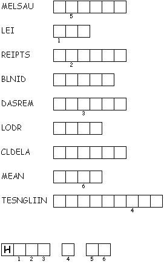
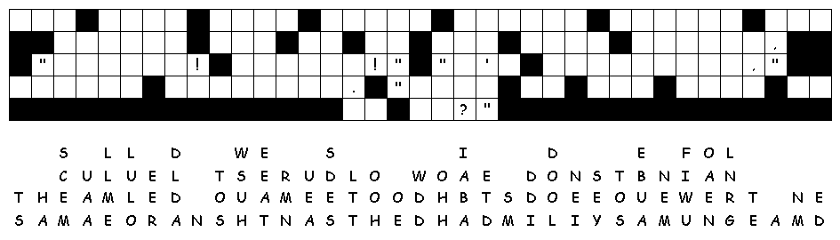

This week's lessons: I Samuel 3:1-10, (11-20), Psalm 139:1-6, 13-18, I Corinthians 6:12-20, John 1:43-51;
This
week's lessons: I
Samuel 3:1-10, (11-20), Psalm
139:1-6, 13-18, I
Corinthians 6:12-20, John
1:43-51;
Elementary School Pew-work
C
A M E S P E A K
|
(1 Samuel 3:10) Now the LORD came and stood there, calling as before, "Samuel! Samuel!" And Samuel said, "Speak, for your servant is listening." (NRSV) |
Word List |
|
from http://www.efree.mb.ca/lectionarypuzzles free to distribute for free with this notice. Words are in a straight line left to right or top to bottom |
|||
|
1. Where did Samuel live? __________________________________________ 2. What did Samuel do there? __________________________________________ 3. Who did Samuel think was calling his name in the night? __________________________________________ 4. How many times did the Lord call Samuel's name? __________________________________________ 5. What did Eli tell Samuel to reply? ____________________________________________________________________________________ Questions taken from Sunday School Lessons; http://www.sundayschoollessons.com/baplord.htm |
 |

Created
by Puzzlemaker
at DiscoverySchool.com
Next week: Jonah 3:1-5, 10 Psalm 62:5-12 1 Corinthians 7:29-31 Mark 1:14-20